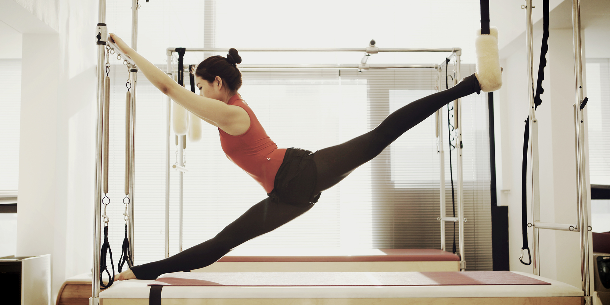
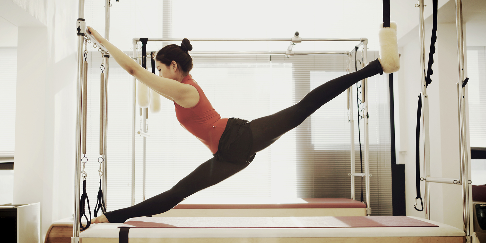

필라테스
필라테스(Pilates)는 1910년대 중반기를 전후한 제1차 세계 대전 중에 영국의 랭커스타 포로 수용소 병원에서 근무중이던 독일인 요제프 필라테스(Joseph H. Pilates)가 포로들의 운동 부족과 재활 치료, 정신 수련을 위해 침대와 매트리스 등 간단한 기구만으로 할 수 있도록 고안된 근육 강화 운동이다.

필라테스(Pilates)는 1910년대 중반기를 전후한 제1차 세계 대전 중에 영국의 랭커스타 포로 수용소 병원에서 근무중이던 독일인 요제프 필라테스(Joseph H. Pilates)가 포로들의 운동 부족과 재활 치료, 정신 수련을 위해 침대와 매트리스 등 간단한 기구만으로 할 수 있도록 고안된 근육 강화 운동이다.
